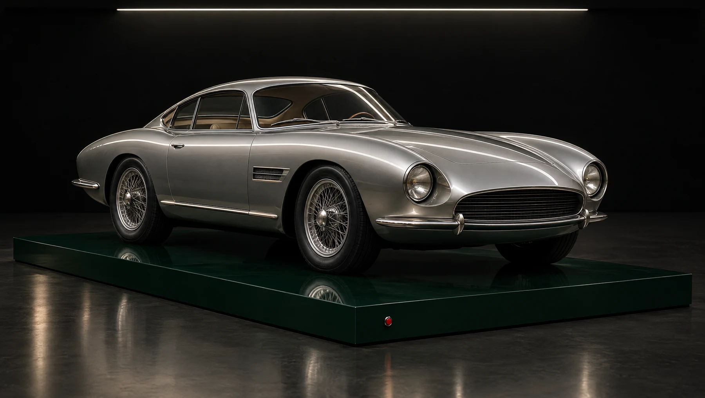

PLAY OPENS POSSIBILITIES
What will you put together?
The story behind the spark +
Every combination opens a story from Joe’s creative life. Spin to discover one.
All stories ↗THE WORLD OF JOE KAMINKOW
Big ideas. Open heart.
Your turn.
GREAT IDEAS START WITH PLAY.
Spin. Keep a symbol. Remix.
PLAY OPENS POSSIBILITIES
Every combination opens a story from Joe’s creative life. Spin to discover one.
All stories ↗02 / THE BATCAVE · LAS VEGAS

ORIGINAL DESIGN STUDY · NOT JOE’S ACTUAL CAROPERATION GRAND SLAM
TOUCH A DETAIL ABOVE
Joe’s vision. Kevin Kay Restorations. A remarkable team.
See the real car & build story ↗IN HIS COLLECTION
Five very different kinds of fun.The Bond-inspired build at the heart of Operation Grand Slam.
03 / EVERY GREAT GAME HAS A STORY
 14 MOMENTS. ONE PLAYFIELD.PLAY JOE K PINBALL ↗
14 MOMENTS. ONE PLAYFIELD.PLAY JOE K PINBALL ↗01 / THE CREATIVE THROUGH LINE
A spark. A team. A world brought to life.
A story you recognize. A machine you want to touch. A little surprise you can’t wait to show someone.
Joe’s career connects these pleasures across pinball, licensed slot entertainment and social games. His gift is both creative and collaborative: finding a possibility, bringing people together, and making the experience feel alive.
Career context: Licensing International’s 2024 tribute ↗
PINBALL / WILLIAMS & DATA EAST
Joe secured the NASA license for Space Shuttle, then co-founded Data East Pinball with Gary Stern. Familiar stories became invitations to step up and play.
The craft is shared: Barry Oursler designed Space Shuttle; David Thiel created Laser War’s music and sound.
The pinball chapters ↗SLOTS / IGT & ARISTOCRAT
At IGT, his work helped turn licensed entertainment into a defining creative language for slots. At Aristocrat, he brought that sensibility to new games and cabinet ideas.
His own account emphasizes richer video, speech, lighting and interaction—alongside the teams that make them work.
Joe on creative evolution ↗SOCIAL PLAY / SPOOKY COOL & ZYNGA
Spooky Cool Labs built a Wizard of Oz city-building game before joining Zynga in 2013. Joe’s work there included Hit It Rich, extending his storytelling instincts into social games.
In October 2022, Aristocrat named him Chief Innovation Officer, a role spanning creative innovation and talent.
The dated announcement ↗PINBALL
Joe secured the NASA license for Space Shuttle at Williams. Barry Oursler designed the machine. A familiar idea and a physical playfield came together through different kinds of creative work.
Explore the source ↗PINBALL
Data East’s 1987 Laser War is recorded by IPDB as the first pinball machine with stereo and subwoofer sound. Joe described building it with Gary Stern; the music and sound are David Thiel’s.
Explore the source ↗PINBALL
A ball-catching, ball-retrieving target appears in US Patent 5,358,244. The named inventors are Joseph Kaminkow and Edwin Cebula. That is a concrete piece of shared invention—not a solo legend.
Explore the source ↗STORIES
Joe’s work in licensed entertainment brought familiar worlds into play. The creative challenge is what happens after recognition: how a story becomes interaction, character and surprise.
Explore the source ↗STORIES
In his 2023 interview, Joe discusses video, speech, lighting and cabinet form as parts of the same experience. This little machine borrows that creative principle; its artwork and rules are original.
Explore the source ↗STORIES
Joe describes assembling complementary creative talents. His contribution matters, and so does the work around him: engineers, artists, programmers, sound designers and fellow game designers.
Explore the source ↗GARAGE
Operation Grand Slam brought Joe’s Bond-inspired DB5 vision together with Kevin Kay Restorations and specialist collaborators. The work behind the polish is part of the story.
Explore the source ↗GARAGE
His published collection ranges from a Fiat 500 Gucci to a Ford GT. Small, exuberant and unexpected can belong in the same garage as a supercar.
Explore the source ↗GARAGE
The DB5’s in-car screen includes games. Even within an elaborate automotive project, Joe found another place to make somebody smile.
Explore the source ↗04 / RECOGNITION, WITH THE CREDITS INTACT
Different fields. A shared appreciation for what Joe brings to play.
Other awards and industry recognition are preserved in the original tribute’s honors list.
FOR JOE, FROM GORDON & HIS TEAM
For your creativity. And your generosity.
This is an independent tribute from Gordon Bellamy and his team, not an official company or product site. Historical game titles belong to their respective owners. Joe’s licensing, leadership and invention are distinguished from the work of collaborators and companies.
The Blender showroom sculpture, Higgsfield cinematic car study and new reel symbols are original artwork created for this tribute. They do not depict an actual commercial game or document Joe’s actual car. The new mechanical effects are original ElevenLabs sound design. The original pinball art and audio are retained from this repository, which credits Higgsfield and ElevenLabs. Photography in linked articles is not reproduced here.
Dates and roles reflect the linked sources, including the October 10, 2022 Aristocrat announcement. Editorial language about Joe’s generosity expresses Gordon’s tribute. The new reel experience is free creative play, with no money, prizes, purchases or gambling services.
All fourteen career moments and their original references ↗ · Art & source credits ↗